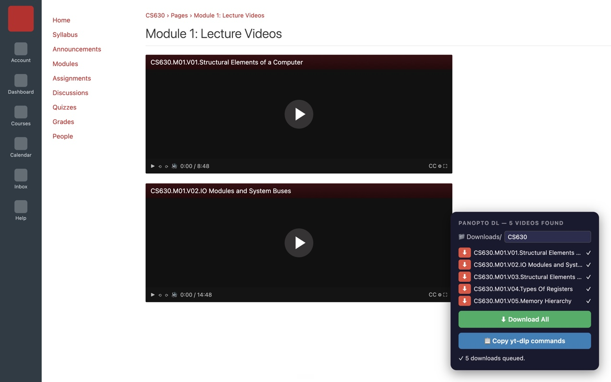

Panopto Video Downloader
a chrome extension that saves the panopto lecture recordings you already have access to —
even when they're buried inside canvas pages with no download button in sight.
built it because my professor never puts his lectures in folders. now one click grabs the whole module.

what it does
- finds every panopto video embedded in a canvas page — including LTI embeds — and lists them in one panel
- downloads a whole panopto folder, a numbered range, or a single video from the viewer
- saves everything into one subfolder of Downloads so a course stays organized
- only downloads what your own account can already watch — no bypassing anything